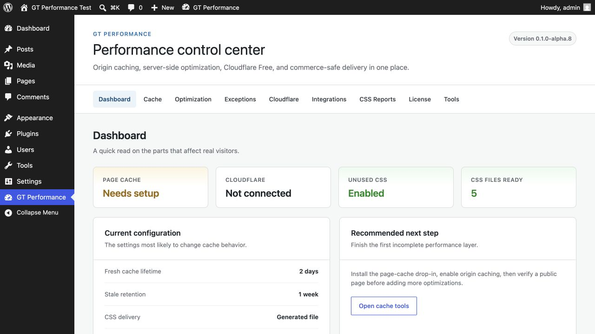
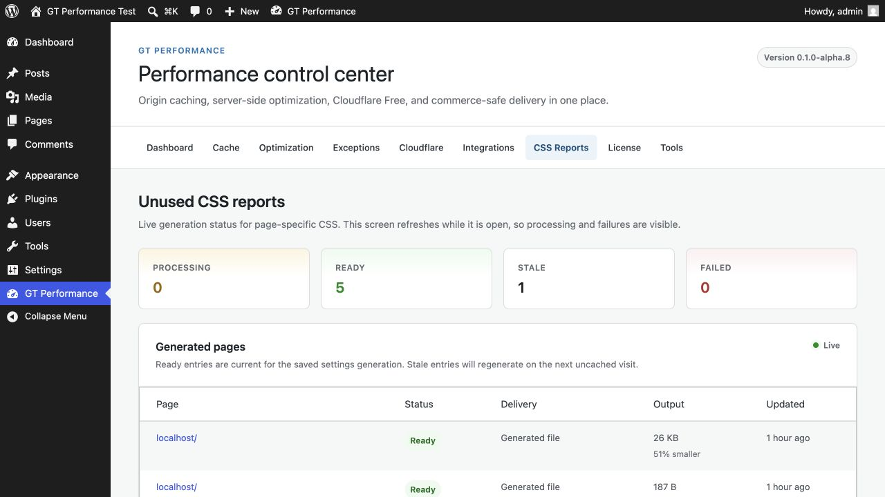

WORDPRESS PERFORMANCE, UNDER CONTROL
GT Performance
Origin caching, Cloudflare Free, server-side unused CSS, Redis, and commerce-safe delivery in one plugin.

CACHE · CLOUDFLARE · UNUSED CSS · REDIS · FLUENTCART · EDD · WOOCOMMERCE
Cache, Cloudflare Free, unused CSS, and Redis without sacrificing checkout safety.
SERVER-SIDE UNUSED CSS
Generated files, inline critical CSS, selector safelists, and a visual report for every URL.
